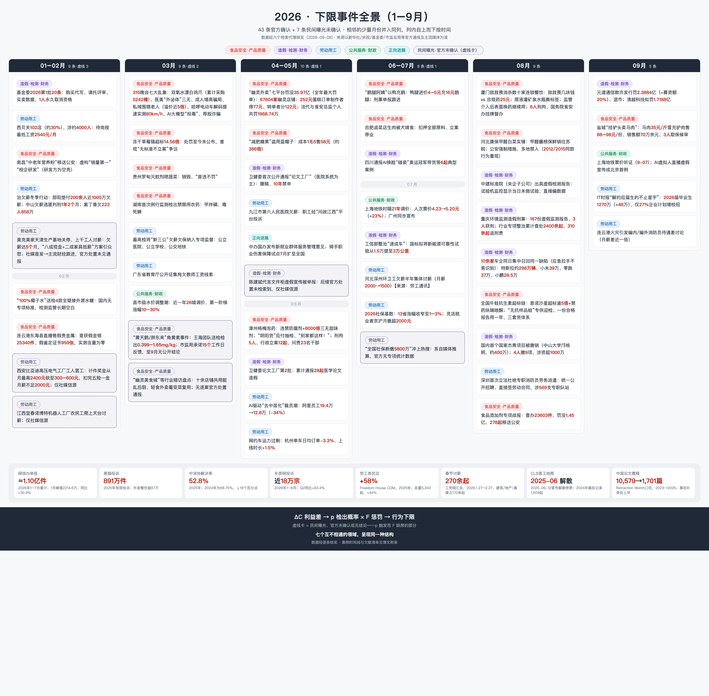

下限是被定价出来的
明知有害还照做，约束行为的不是道德，而是三个数：省下多少钱、被查的概率、查到了罚多重。
1三个案例，同一个问题
2026 年 5 月，福建漳州。暗访记者问收购点的工人：泡过药的杨梅你们自己吃吗？答案是被无数人引用过的那句：“泡药的，我们自己都不敢吃。”同一场暗访里，收购点老板面对镜头理直气壮：“别家都这样！为什么就曝光我？”他们备好没泡药的“阴阳货”应付抽检，泡过脱氢乙酸钠的杨梅发往浙江、上海，单家收购点旺季日销五千斤。事后追责：刑拘 5 人、行政立案 12 起、23 名干部问责。
2026 年 8 月，国家自然科学基金委员会公布年度第二批科研不端案件通报：国内首个国家杰青项目被正式撤销（中山大学，约 400 万元资助）。举报者不是任何制度内的监督机构，而是一位科普博主。
2026 年 4 月，市场监管总局对拼多多、美团、京东、饿了么、抖音等七个平台开出全年最大罚单：合计罚没 35.97 亿元，原因是纵容 67,604 家“幽灵外卖店”（伪造许可证 + 订单转单）。这笔罚单顺带拆开了一个微观结构：一份 252 元的蛋糕订单，实际制作者得到 77 元，转单者分走 122 元。
三个场景有一个共同的细节：当事人清楚地知道产品有害，“泡药的我们自己都不敢吃”就是证据。知道有害，仍然照做，说明真正约束行为的不是“知不知道这是坏事”。那是什么？
是价格。行为下限由三个变量决定：违规的成本节省 ΔC、检出概率 p、惩罚 F。下限落在 pF 追不上 ΔC 的地方。这个设定来自 Becker（1968）的犯罪经济学。下面先把它写成公式，再拿 2023–2026 年间逐条核实的 50 起事件校准它，最后留下四个可以拿数据检验的问题。

2下限的定价公式
一个经营者可以把质量从合规水平 \(\bar q\) 降到 \(q<\bar q\)：掺违禁添加剂、省掉一道消杀工序、删掉一组测试。降级省下的成本记为 \(\Delta C(\Delta q)\)，\(\Delta q=\bar q-q\)，降得越狠省得越多。降级被查处的概率为 \(p\)，查实后的惩罚折算成钱是 \(F\)，为了不被查到花的隐匿投入是 \(k\)。违规的期望净收益：
\[G=\underbrace{\Delta C}_{\text{成本节省}}-\underbrace{p(k)\cdot F}_{\text{期望惩罚}}-\underbrace{k}_{\text{隐匿投入}}\]
违规条件只有一个：\(G>0\)。先不管隐匿（\(k=0\)），行为下限 \(q^*\) 就是让这个式子恰好归零的那个质量水平：
\[\Delta C(\Delta q^*)=p\cdot F\]
这是一个定价等式：下限就是市场给“作恶风险”开的价。道德不在这个式子里。道德可以改变一个人对某笔交易的参与意愿，但改变不了均衡价格，因为市场上总有别的供给者。
分界线在对数坐标里是一条斜率 −1 的直线：p 翻倍和 F 翻倍效果一样。“罚得重、查得少”和“查得勤、罚得轻”，只要乘积一样，威慑就一样。ΔC 一变，整条线跟着平移：省得越多，同样的 p 和 F 越拦不住。
3隐匿：花钱买一个更低的 p
\(p(k)\) 写成隐匿投入的函数，是因为降低检出概率不是免费的：撕掉敌敌畏的标签灌进矿泉水瓶、给杨梅备“阴阳货”、给年检线装 OBD 干扰仪、养一批“无抗样品蛙”专供迎检、在试验机监控拍着的情况下直接编检测数据，每一条都是花真金白银买的 \(p\) 值折减。设隐匿技术为指数形式 \(p(k)=p_0e^{-\lambda k}\)，经营者对 \(k\) 求最大化，一阶条件：
\[-\frac{\partial p}{\partial k}F=1\;\Longrightarrow\;\lambda\,p(k^*)\,F=1\]
\[p^*=\frac{1}{\lambda F},\qquad k^*=\frac{\ln(\lambda p_0F)}{\lambda}\]
（只有 \(\lambda p_0F>1\) 时才值得隐匿，否则 \(k^*=0\)。）这个内点解有三层含义，每一层都能在案例里找到对应：
- 隐匿投入会把检出概率精确压到与惩罚成反比为止。\(F\) 定得越重，捂的技术就越精细，这不是悖论，是优化的结果。代回去，期望罚 \(p^*F=1/\lambda\)，和 \(F\) 无关。
- 对策随监管协同进化。\(\lambda\) 是“对策技术参数”：新京报暗访升级，消杀公司学会了监管介入后表面换合规药、实际继续用敌敌畏；杨梅商贩学会“打游击”；检测造假升级到“无车年检”和用仿真数据补账面里程。监管每一次提高 \(p\)，都在推高下一轮的 \(\lambda\)。
- 观察到的“荒诞行为”是均衡的一阶条件，不是当事人的愚蠢。撕标签这个动作，和求解 \(p^*=1/(\lambda F)\) 是同一件事。
在这个模型里还能顺手推出一件更扎心的事。隐匿之后的净收益是 \(G^*=\Delta C-\frac{1}{\lambda}\big(1+\ln(\lambda p_0F)\big)\)，\(F\) 只在对数里出现。要让 \(G^*\le0\)，需要 \(p_0F\ge e^{\lambda\Delta C-1}/\lambda\)：隐匿越便宜，威慑需要的 \(p_0F\) 随 ΔC 指数上涨。
4道德不是约束变量
对 \(q^*\) 做比较静态：期望惩罚 \(pF\) 越高，下限越高；\(pF\) 不动，下限不动。这意味着“道德滑坡论”和“道德完好论”对行为的预测力相同，都是零。它们讨论的变量根本不在方程里。
这也解释了那个著名的困惑：从业者一边干，一边说“我自己都不敢吃”。这句话只证明他们掌握对自己有害的信息，是自我保护的知识，不构成道德判断。知道有毒，和认为不该卖给别人，中间隔着“别人”这个维度。社会学早就给这个缺口起了名字：中和技巧（Sykes & Matza 1957）。“大家都这样”“不干就出局”“凭什么曝光我”，几句话就把行为从道德评价里摘了出去。杨梅案里那句“别家都这样！为什么就曝光我？”是教科书级的中和话术，而且是新华社通报记录的原话。
5为什么劣币驱逐良币
单个企业的定价公式解释不了“为什么所有人都在做”，还需要两块拼图。
消费者验证不了质量。食品、消杀服务、检测报告有一个共同的属性：消费者即使在消费之后也无法验证质量，经济学里叫“信任品”（Darby & Karni 1973）。你吃不出杨梅里有没有脱氢乙酸钠，尝不出外卖后厨有没有转单，看不懂检测报告是真是假。信任品加上信息不对称，就是 Akerlof（1970）柠檬市场的原始设定：买方只愿意按平均质量出价，质量本身拿不到价格回报。
合规者被挤出市场。质量拿不到溢价，价格就成了唯一的竞争维度。设合规成本 \(c_h\)，违规成本 \(c_l<c_h\)，\(\Delta C=c_h-c_l\)。违规者额外背着期望惩罚 \(pF\)。价格战下：
\[\text{合规者存活条件：}\quad c_h\le c_l+pF\iff pF\ge\Delta C\]
反过来读：只要 \(pF<\Delta C\)，合规企业注定亏损离场。敌敌畏几块钱一瓶，合规消杀药剂 25 元一瓶，同规格餐厅报价差 8 倍，这就是 ΔC 的报价单。槽头肉 3 元/斤替代 12 元的五花肉，ΔC = 9 元/斤。“不做的会被淘汰”在这里成了一个严格不等式：三聚氰胺时代的奶农面对按蛋白含量计价的收购体系，不掺就是亏损，掺假不是堕落，是存活条件。
还有更狠的一层：在这个均衡里合规本身就是税。2026 年杨梅案后，多省对福建杨梅“一刀切”禁入，没泡药的果农承担了泡药商贩的代价，违规者把成本外部化给了全行业。这是 Gresham 定律在合规市场的版本：劣币驱逐良币，前提只有一个，\(pF\) 太低。
6被查的概率，比罚多重更重要
直觉会说：罚重一点、判死几个，就没人敢了。三聚氰胺之后确实枪毙了人，\(F\) 高到了顶。但 2009 年之后的掺假并没有停，直到“批批检”成为常规动作才真正消失。模型对这个现象的解释只有一行：有效威慑是期望值
\[D=p\cdot\min(F,W)\]
\(W\) 是潜在违法者的财富约束。罚款超过支付能力后，\(F\) 的边际威慑归零，剩下的唯一杠杆是 \(p\)。
这不是中国特例，是执法经济学四十年反复验证的结论。Polinsky & Shavell（1979）证明：风险中性时最优执法是“罚款拉满、检出概率压到最低”，只有罚款撞上财富约束时才不得不提高检出概率。Nagin（2013）综述了五十年的实证证据，结论一致：“查得到的概率”比“罚得多重”更能阻止作恶，加重惩罚的额外威慑“微弱到可以忽略”。
三聚氰胺是这个理论的完美自然实验：同一批人、同一套道德，\(F\) 没变（甚至更重了），只有 \(p\) 从约等于 0 跳到常态化的批批检，行为就消失了。反例是甲醛白菜：2012 年山东青州、2015 年河北和山东、2026 年 8 月河北康保再现实锤。十四年，同一个行为，换个地方重现，这个生态位里的 \(p\) 十四年没动过。
7专项整治过后，查处会回落
中国的执法不是平稳的流，是脉冲：平时 \(p\) 很低，专项整治期间冲高，之后衰减。写成函数：
\[p(t)=\bar p+(p_c-\bar p)\,e^{-\lambda(t-t_0)}\]
\(t_0\) 是专项行动启动日，\(p_c\) 是运动峰值，\(\bar p\) 是平时的基线，\(\lambda\) 是衰减速度（和第 3 节的 \(\lambda\) 不是同一个）。周雪光（2012）把这种机制称为运动型治理：常规官僚机制失灵时的（暂时）替代机制，特征恰恰是叫停成本高、退出也快。这个函数有两个直接推论。
理性违规者的最优策略是时间迁移。长期违规收益取决于 \(\int p(t)\,dt\)，而不是峰值 \(p_c\)。从业者经历过每一轮整治都会退潮，所以“行业默许”不是麻木，是对 \(\lambda\) 的理性预期。龙海干部对记者承认：“今年加大了抽查力度，但仍有商贩钻空子、打游击。”打游击就是跨期套利。
观测到的惩罚记录会在运动窗口内扎堆，事后回落。这不是猜想，是中国环境执法的实证结论：Lin, Chu & Sun（2023）用双重差分评估中央环保督察，发现督察显著改善了空气质量，但短期显著抑制经济增长。高压真实存在，成本真实存在，持续性存疑，这正是 \(\lambda>0\) 的宏观代价。
2026 年提供了一个正在进行的样本：漳州从 5 月 15 日起派干部驻点 45 天专项整治；新京报的评论标题自己都在提醒，“整治需避免沦为舆情治理，搞成‘一阵风’”。\(\lambda\) 到底多大，是文末第一个要估计的参数。
8惩罚落在谁头上
还差最后一块：\(F\) 落在谁头上。
油罐车混装食用油案（2024）给出了教科书式的分层：七家企业罚没合计约 1,104 万元（行政化），两名司机刑事立案、三人行政拘留（刑事化）。星宇股份应届生“二选一”事件里，被约谈的学生在 8 月底拿到了致歉和补偿，起作用的杠杆不是劳动仲裁，而是他们把材料递到了港交所和奔驰、大众的欧洲客户手里。为什么要绕开正式渠道？因为数据早就给正式渠道定了价：一审劳动者胜诉率 26.08%，四成劳动者在诉讼中没有代理。
把外包链条形式化：委托、分包、派遣的每一层合同，都在把惩罚的份额 \(\alpha_i\) 沿链条往下转，\(\sum\alpha_i=1\)，而 \(\alpha\) 怎么分由各层的议价能力决定。出事时 \(E[F_i]=\alpha_iF\)，议价能力最低的人拿到最大的 \(\alpha\)。消杀公司出事，刑拘的是公司员工和法定代表人；深圳要到 2026 年才第一次立法禁止政府专职消防员劳务派遣，在此之前，“编内编外同样进火场、待遇差一倍”是常态。
这也解释了一个反直觉的观察：罚没金额动辄千万，为什么行为不改？对组织而言 \(F\) 是可以做进预算的经营成本（1104 万、1287 万、35.97 亿都付得起），对个人而言刑责才致命，而刑责恰恰沿着链条滑向了 \(\alpha\) 最大的那群人。威慑不是不存在，是打在了不做决策的位置上。
9这些案子是被谁发现的
上面所有公式里，\(p\) 是最神秘的变量。2023–2026 年经核实的 43 条事件（另有 7 条民间曝光未确认）给出了它的供给侧画像，各渠道的分工相当一致。
检测器是媒体和博主，不是监管。鼠头鸭脖（学生视频）、油罐车/黄焖鸡/敌敌畏（新京报暗访 ×3）、杨梅（暗访）、甲醛白菜（博主曝光）、华中农大（11 名学生联名 125 页）、杰青撤销（科普博主实名举报）、幽灵外卖（媒体调查），几乎每一件都是制度外的力量打开的。常规抽检在名单里几乎缺席；偶尔出现还是反向的：鼠头鸭脖初判“鸭脖”、冻干草莓镉超标“无标准不立案”、贵州罗甸灭蚊剂喷蔬菜“首违不罚”。
更深的裂缝在检测基础设施本身：中国建筑标准设计研究院，一家给市政工程出检测报告的央企子公司，在试验机监控显示“当日未做试验”的情况下出具了报告；重庆一家环境检测公司三年开出 167 份虚假监测报告；机动车检测线“无车年检”。当 \(p\) 的测量仪自己被腐蚀，\(p\) 就不只是低，而是系统性失真。生态环境部专项整治累计查处第三方监测造假 2,400 余起、310 余起追究刑责，这个规模本身就说明，“压低 p”已经是一个有产能、有定价的行业。
民间渠道的量化画像（2026）：
| 民间检测渠道 | 体量 | 趋势 |
|---|---|---|
| 网信办举报受理 | 1–7 月累计约 1.10 亿件（1 月峰值 2214.6 万，同比 +30.9%） | 2–7 月同比转负 |
| 黑猫投诉 | 2025 年 891 万件（外卖餐饮 67 万+） | 平台回复率分化：淘天仅 4.43% |
| 车质网 | 1–8 月近 18 万宗，Q2 同比 +83.4% | “城市 NOA 不兑现”集体投诉环比 ×3.3 |
| 中消协 | 2025 年受理 201.6 万件 | 解决率 68.75% → 52.8%，降了 16 个百分点 |
| 劳工集体行动 | CLB：2023 年 1,794 起、2024 年 1,509 起 | CLB 已于 2025-06-12 解散停更；后续记录都在境外（CDM：2025 年劳工类 +58%） |
消费端的检测在繁荣（车质网 +83.4%），解决率在崩（−16 个百分点）：p 在升、F 在降。劳动端的民间检测器则已经物理性消失：中国劳工通讯 2025 年 6 月 12 日宣布解散，同日香港警方查处“六人和一个组织”。此后，工人集体行动的记录只存在于境外数据库（Freedom House CDM：2025 年 5,343 起，+44%，劳工类 +58%）和 Telegram 频道里。
王海的两个结局是检测生态最精妙的一块切片。同一个打假人、同样的送检方法：优思益“伪进口”（小目标），民间实测、央视接力、三部门立案、全网下架，\(p\to F\) 闭环成功；黄天鹅“角黄素”（头部供应商 + 胖东来顶流渠道），市监局承诺 15 个工作日反馈，到 9 月仍然没有公开结论。同一个 \(p\)，两种 \(F\)，唯一系统性的差别是被检测对象的议价能力。F 落地的速度，与目标的市场权力成反比：这个命题值得单独写一篇论文，而且已经有一个现成的对照实验在跑了。
10从一亿件举报到 43 条确认
把上面所有层叠起来，2026 年从举报到刑责的逐级收窄长这样：
\[\underbrace{\sim1.1\text{ 亿件}}_{\substack{\text{民间举报}\\\text{网信办 1–7 月}}}\to\underbrace{10^6\text{–}10^7}_{\substack{\text{平台投诉}\\\text{黑猫 891 万/年}}}\to\underbrace{10^2\text{ 级}}_{\substack{\text{热点化}\\\text{媒体暗访/博主}}}\to\underbrace{43\text{ 条}}_{\text{官方确认}}\to\underbrace{10^1\text{ 级}}_{\text{刑责}}\]
这张图同时是一份方法论警告：我手里的时间线只收录了官方确认的事件，这个准入门槛本身就是 F 的开关。进图的条目，是 p 触发之后 F 跟上了；留在民间的（黄天鹅悬案、西安比亚迪工厂罢工、美克美家千人讨薪：社媒曝光、财经媒体跟进、官方处置无下文），是 p 触发了、F 缺席。
所以，用“热点事件越来越密集”论证“环境越来越恶化”，是把“曝光量”的波动当成了“发生量”的趋势。检测强度、媒体周期、平台算法都会放大计数。时间线能证明的是跨领域的结构重现：食品、学术、财务、建筑检测、环保监测、劳动用工、地方财政七个互不相通的领域，呈现同一个“ΔC → 捂 p → F 底层化”的结构。但“趋势是否在恶化”，必须用比值类指标（解决率、胜诉率、响应时滞、确认率）做纵向检验，而不是数新闻条数。这既是本文的立场，也是它给自己划的边界。
11四个可以拿数据检验的问题
框架要活下来，就得给出能被数据证伪的命题。
- RQ1 下限定价。行业级的 ΔC（合规与违规的成本差）与处罚密度的横截面关系。框架正确的话，ΔC 大的行业（食品加工、检测认证、外卖）违法记录密度应系统性地高于 ΔC 小的行业，控制执法资源之后依然成立。
- RQ2 查处力度的回落速度。把每次专项整治的启动当成一次实验，比较启动前后处罚记录密度的变化，估计回落速度 \(\lambda\)。数据：市监总局季度典型案例批次、信用中国行政处罚记录、基金委通报批次（2023–2026 已人工建库）。监管自己发布的颗粒度，已经够拼出一张逐年逐行业的统计表。
- RQ3 惩罚落在谁头上。按处罚对象分类（企业 / 法定代表人 / 操作工 / 司机 / 派遣工），统计刑罚与行政罚款的分布。假设：越靠近链条底端，吃刑事处罚的概率越高。油罐车案（企业 1104 万行政化 vs 司机刑事化）是第一个观察点，接下来用全样本检验它是不是普遍规律。
- RQ4 案子是被谁发现的。给每条已处罚案件标注发现渠道（日常抽检 / 投诉 / 媒体 / 专项行动），估计各渠道份额的时间趋势。从时间线看，媒体加博主占主导，而且“官方确认”这道闸门在收紧，中消协解决率 −16 个百分点是它在消费端的投影。
12局限
诚实的边界清单，和正文一样重要：
- 它不证明“道德没滑坡”，只证明道德不是必要变量。要单独检验道德变迁，需要实验证据（跨时诚实实验、失物钱包范式），观察数据做不到。
- 它不识别趋势。43 条事件的密度受检测强度、媒体周期、本文检索强度三重放大。纵向比较需要比值指标和固定样本。
- 网信办举报量同比转负是一个有歧义的信号：可能说明违法量下降，也可能是举报意愿、触达成本或平台分流变了，数据本身无法区分。
- 撤稿数字回落（10,579 → 1,701）有事后补录上浮的技术性陷阱：按 Retraction Watch 数据库的更新节奏，近三年的数字几乎必然上修，不宜当作改善的证据。
- “官方确认”这道闸门本身会变。本文把进入时间线等同于 F 落地，但确认速度还取决于舆情规模、地方财政激励、涉事企业的政治关联（参考文献里的 Fang, Li & Wu 2025 和王裕华 2016 恰好构成这一层的正反证据）。
- 单个案例永远不能证明因果。时间线的作用是划出“该去哪里看”，不是给结论。
参考文献
理论框架
- Becker, G. S. (1968). Crime and Punishment: An Economic Approach. Journal of Political Economy, 76(2), 169–217. DOI: 10.1086/259394
- Stigler, G. J. (1970). The Optimum Enforcement of Laws. Journal of Political Economy, 78(3), 526–536. DOI: 10.1086/259646
- Polinsky, A. M., & Shavell, S. (1979). The Optimal Tradeoff between the Probability and Magnitude of Fines. American Economic Review, 69(5), 880–891.
- Polinsky, A. M., & Shavell, S. (2000). The Economic Theory of Public Enforcement of Law. Journal of Economic Literature, 38(1), 45–76. DOI: 10.1257/jel.38.1.45
- Shavell, S. (1991). Specific versus General Enforcement of Law. Journal of Political Economy, 99(5), 1088–1108.
- Nagin, D. S. (2013). Deterrence in the Twenty-First Century. Crime and Justice, 42(1), 199–263. DOI: 10.1086/670398
- Graetz, M. J., Reinganum, J. F., & Wilde, L. L. (1986). The Tax Compliance Game: Toward an Interactive Theory of Law Enforcement. Journal of Law, Economics, & Organization, 2(1), 1–32.
信息不对称与质量
- Akerlof, G. A. (1970). The Market for "Lemons": Quality Uncertainty and the Market Mechanism. Quarterly Journal of Economics, 84(3), 488–500. DOI: 10.2307/1879431
- Darby, M. R., & Karni, E. (1973). Free Competition and the Optimal Amount of Fraud. Journal of Law and Economics, 16(1), 67–88. DOI: 10.1086/466756
社会学机制
- Sykes, G. M., & Matza, D. (1957). Techniques of Neutralization: A Theory of Delinquency. American Sociological Review, 22(6), 664–670. JSTOR: 2089195
中国治理
- 周雪光（2012）。〈运动型治理机制：中国国家治理的制度逻辑再思考〉，《开放时代》，2012 年第 9 期，100–120 页。
- Lin, B., Chu, S., & Sun, W. (2023). Central environmental protection inspection, environmental quality, and economic growth: Evidence from China. Applied Economics, 55(50), 5956–5974. DOI: 10.1080/00036846.2022.2140776
- Lin, J., Long, C., & Yi, C. (2021). Has central environmental protection inspection improved air quality? Evidence from 291 Chinese cities. Environmental Impact Assessment Review, 90, 106621.
案例证据涉及的中国实证文献（全部经核真）
- Jia, Chen & Yang (2025). Bond default of super-large real estate company and government debt risk. International Review of Financial Analysis, 103. —— Chen et al. (2023). Land, 12(8): 1597. —— Wang, Yu & Rao (2026). Public Finance Review, 54(3). —— Chen, He & Liu (2020). JFE, 137(1): 42–71.（房地产 → 地方财政线）
- Yasuda (2015). Why Food Safety Fails in China. The China Quarterly, 223, 745–769. —— Lorentzen, Landry & Yasuda (2014). Journal of Politics, 76(1).（食品安全线）
- Lin, L. (2022). Power resources and workplace collective bargaining: Evidence from China. Journal of Chinese Sociology, 9(19). —— Halegua (2016). Who Will Represent China's Workers? NYU.（劳动线）
- 王裕华 (2016). Beyond Local Protectionism. The China Quarterly, 226. —— Li & Wang (2024). China Economic Review, 88. —— Kong, Tao & Wang (2020). China Economic Review, 63. —— Fang, Li & Wu (2025). Journal of Public Economics, 248. —— Long & Wang (2015). International Review of Law and Economics, 42. —— Liu, Lu, Peng & Wang. NBER WP 30432.（政商与司法线）
数据附件：案例时间线、文献核真清单与研究计划存于个人项目仓库，暂未公开；本文每一处数字都可以在对应的官方通报或媒体报道中逐一复核。